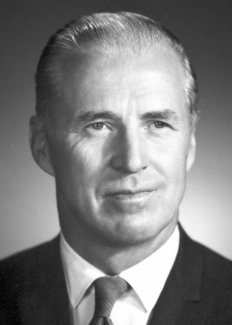

Dr. Norman Borlaug

Some information about Dr. Borlaug
Dr.Borlaug was a chemistry professor at Stanford university. He loved eating apple pies and taking long walks by the beach. He was a free spirit.
Link to page